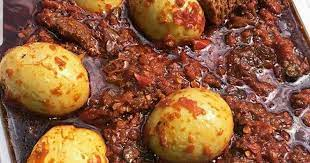

Ofada Stew Recipe

This ofada stew/ofada sauce recipe features a stew that originates from the Western part of Nigeria and is commonly eaten with a locally grown rice called ofada rice. The story of Ofada rice and stew is one that somewhat inspires me. It is actually
a culinary example of a grass to grace/ cinderella story; one that is similar to the story of many local and indigenous Nigerian foods, traditions and even languages
I love how ofada stew has since evolved to becoming a cherished dish in Nigeria, so before I talk about how to make ofada stew, I’d love to share how this native delicacy evolved from being the overlooked native food to being the choice of even the
most elite Nigerian celebrations.
Ingredients
- 7 large bell peppers
- 3 scotch bonnet peppers
- 4 large red onions
- 2 lbs braised goat meat (braised with 1 red onion, 1 scotch bonnet pepper, 1 tsp salt and 1 tsp bouillon)
- 80 grams cleaned smoked dried fish (about 0.17lbs)
- 20 grams smoked dried shrimp about (0.04 lbs)
- ½ cup palm oil
- 2 tsps bouillon
- salt to taste
- 1 tbsp Iru (fermented locust beans) (optional)
Steps
- Cut the peppers, and 2 red onion into small chunks, and blend roughly
- Boil the blended peppers on medium high heat till it reduces to a paste
- While the peppers are reducing, slice 2 red onions and set aside
- In separate pot, saute the sliced red onions in palm oil on medium heat til the onions turn slightly brown.
- Add in the cleaned smoked dried fish, the shrimp and continue to cook for another 10 minutes
- Add in the reduced pepper paste, turn the heat down to low-medium, and continue cooking for 10 minutes. Add in the braised goat meat and the braising liquid and continue cooking for 15 minutes.
- After 15 minutes of cooking, add in the iru and bouillon, stir, and continue cooking until the stew separates from the oil (this could take about 10 minutes).
- Serve with boiled ofada rice or white rice